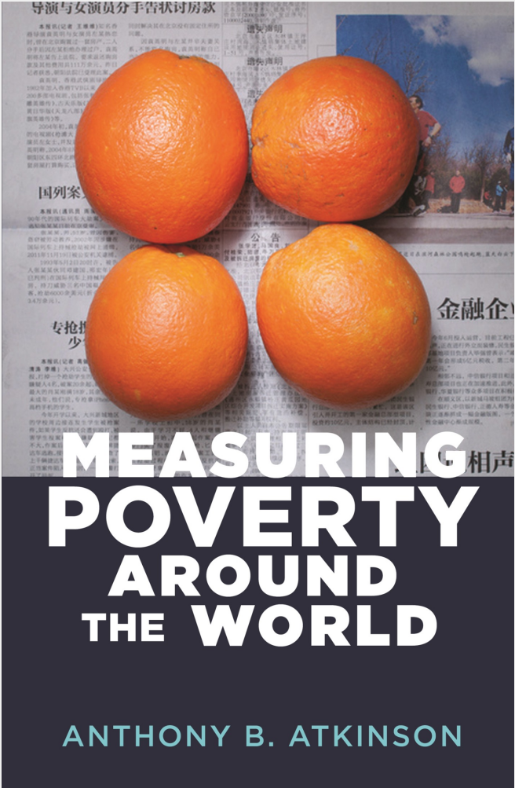
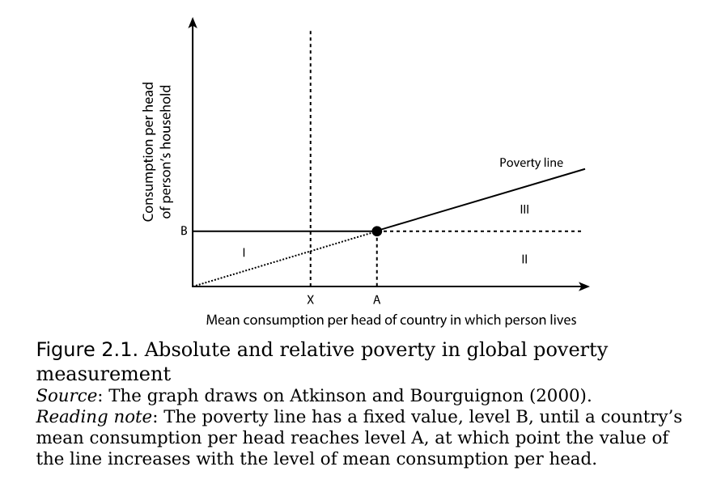

Approches to Measuring Poverty

According to the Book Measuring Poverty Around the World by Prof. Anthony B Atkinson, the following are different ways to measure poverty are - Basic Needs based approach, Capabilities based approach, Rights based approach and Subjective and perception based approach
Basic Needs Approach
- This approach is based on either consumption or Income.
- In this approach there are three steps involved. They are
- Estimating the nutritional requirements
- Converting the nutritional requirements into food budget
- Making an allowance for nonfood items
- Above three steps will decide the threshold for the poverty line
- The drawback of this approach is that a lot of judegment is required at every step of the process making comparisions difficult across time and regions
Capabilities Approach
- Individual well-being should be judged in terms of the functionings achieved by the individual and of the capabilities open to them
- In terms of measuring poverty this should be seen as a deprivation of capabilities, where the deprivation limits the capabilties of the individual to purse their goals in life.
- Poverty is measured by asking the individual about his/her current income and his unmet aspirations like taking a vacation, purchasing a bike etc. There is no clarity on what threshold to select for the poverty in this case.
- Their is judgement involved in this approach as well

Rights Approach
- Equal rights are provided to all individuals in this approach. In Basic needs approach the poverty line for men and women was different due to differences in estimation for nutritional needs. In Rights approach all humans are considered equal. Along with the food needs Rights approach also considers health, education, and other dimensions as well as a basic human right
Subjective Approach
- In subjective approach each individual classifies himself if he is poor or not. There was lot of criticism that institutions measuring poverty is not considering the views of the people who are suffering from poverty. This method adds considerable value by recording the view of the individual. The drawback of this method is that there are multiple poverty values existing in parallel and this method is subjective and requires a objective measure to make it more actionable.
Important points
- Income and expenditure are commonly used as metrics to be compared with a determined poverty threshold
- Surveys on living standards and household income and expenditure are generally the sources of data used for deriving expenditure and income
- In most developed countries, the national poverty line is based on relative standards. This relative poverty line considers the median income of an individual or family to maintain an average living standard as a point of comparison to those who might be considered poor.
- The World Bank has international poverty lines including $3.20 per day, which is based on 2011 purchasing power parity. However, many countries adopt the cost of basic needs approach in measuring absolute poverty. This estimates severe deprivation of basic human needs such as food, safe drinking water, sanitation facilities, health, shelter, education, and information (UN 1995). The approach determines a food basket that meets the minimum nutritional requirements set by the World Health Organization and Food and Agricultural Organization of the United Nations.
- Incorporating “equivalence scale adjustments” is another common practice in poverty estimation. An equivalence scale indicates that households with the same income or expenditure do not necessarily have the same economic capacity, since this capacity will depend on the number of dependent members in the household. Economic status is therefore usually determined by dividing the household income or expenditure by the family or household size,then determining whether the resulting value is above or below the poverty line. Some NSOs also assign index weights based on the age of the family members to estimate poverty